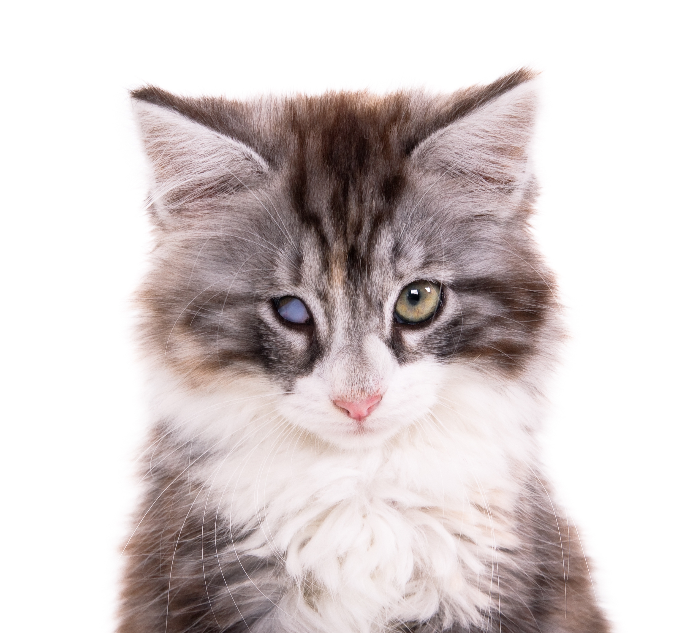

Nome: Resilinha
Idade: 3 anos
Curiosidade: Se dá muito bem com crianças

Nome: Chicrinho e Caneco
Idade: 1 ano
Curiosidade: Gêmeos em ação

Nome: Caramelo
Idade: 5 anos
Curiosidade: Cachorrinho oficial da nação brasileira

Nome: Blessed
Idade: 3 anos
Curiosidade: Uma luz de esperança em sua vida

Nome: Pernalonga
Idade: 2 anos
Curiosidade: Não curte cenoura

Nome: Canelinha
Idade: 8 anos
Curiosidade: The crème de la crème